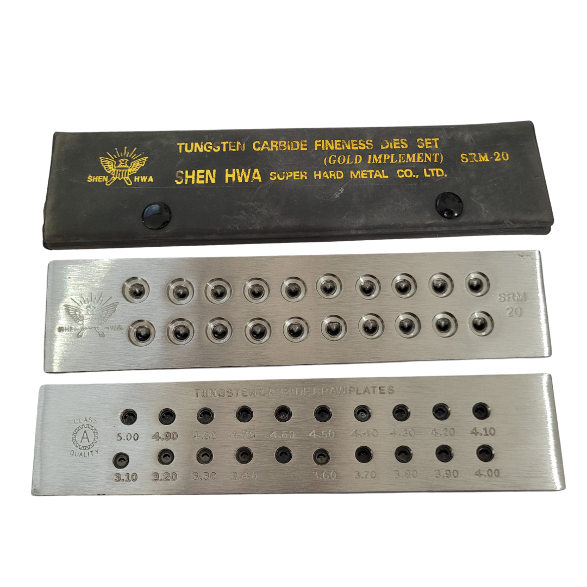
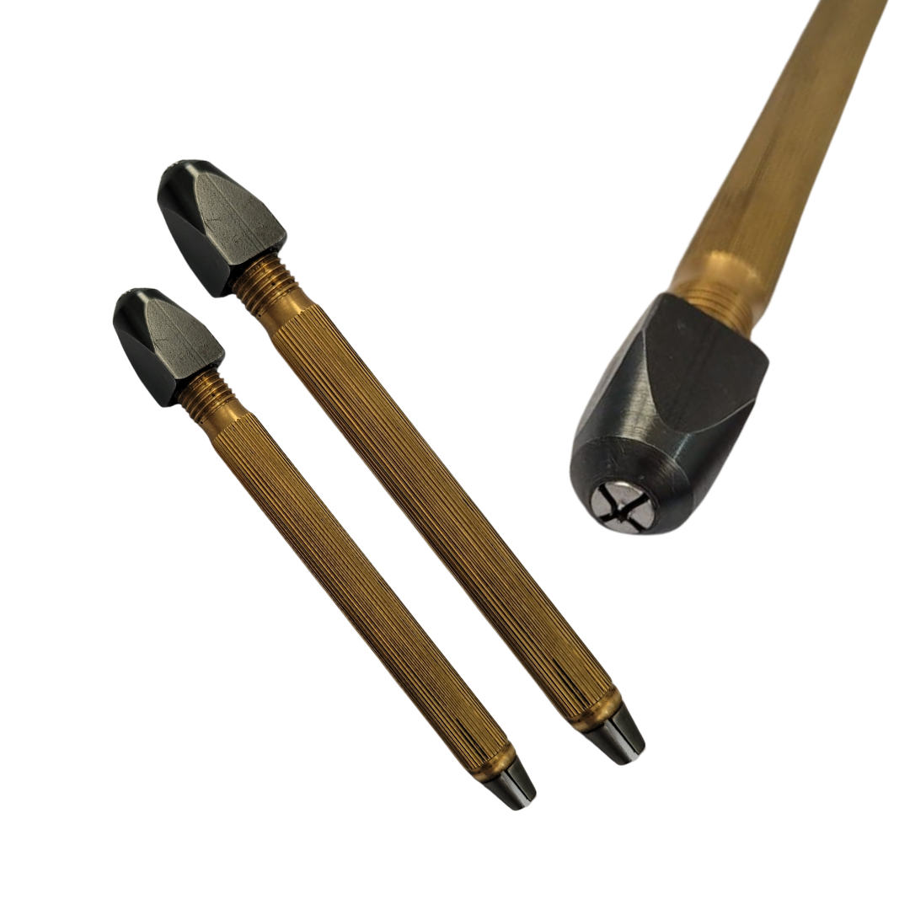
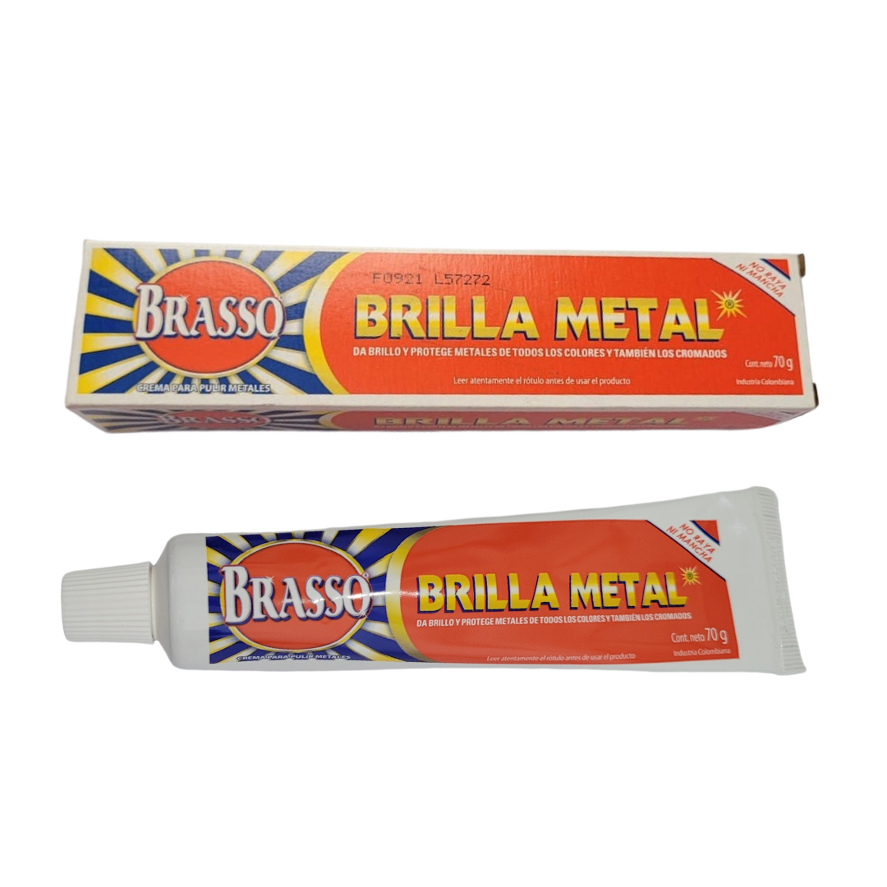

Marquesa

Octagonal

Redonda

Lágrima

Óvalo

Flor

Corazón

Ice

Cuadrado

Cepillo Mini Recto de Latón

Disco diamantado

Lijas 320 y 400

Sacabocados de golpe

Ácidos (10K, 14K, 18K)

Alicate Corte Lateral

Alicate Punta Redonda

Cortador al Ras de Precisión

Cortador Biselado delgado

Pinza Corte Diagonal

Pinza Miniatura de Punta y Corte

Pinza miniatura tipo tenaza

Pinza Punta Redonda

Tenacilla Punta Fina

Tijeras para Joyero

Coral

PoXipol

Llave de Mandril con Mango Cómodo

Mandril Porta Broca Foderom

Motor Foredom

Pedal Foderom

Camilla para anillos

Laminador

Lavadora Gemoro

Lavadora Ultrasónica

Motor Para Pulir

Tómbola magnética

Fresa Trompo

Porta Esmeril

Punta de Diamante #120

Punta de Diamante Dremel

Fresas Redondas

Ácido Bórico

Adaptador con válvula de seguridad

Adaptador Para Dos Mangueras

Adaptador Para Una Manguera

Asa para Crisol

Bicarbonato

Boquilla grande 22 mm

Boquilla Mediana 17 mm

Boquilla fina 8 mm

Borax

Cono Borax

Crisol 180g.

Crisol Tubo

Crisol

Cuello Curvo 70 mm

Cuello curvo 78 mm

Kit de soplete y soldadura autógena

Lingote

Maneral

Nipe 5 mm y 8 mm

Sal para Dorar

Varilla de Grafito

Yeso
Anillero de Metal
Anillero de Plástico
Calibrador de Latón
Calibrador Digital
Medidor de Espesores de Lámina
Tribule de Aluminio
Abrazador de Anillos
Caucho para Moldeo de Joyas

Mandril de Anillo Calibrado Pepetools Gold Standard
Marco de Molde de una Cavidad

Hilera Forma de Luna
Hilera Redonda
Hilera Redonda TOYO
Juego de Esmeril
Juego de Fresas
Tarraja de 5 machuelos
Juego de 5 Limas
Juego de Limas
Lima Media Caña
Lima triangular
Paquete de Limas de Aguja
Alcohol para quemar
Jabón Líquido Ultrasonic
Limpiasteg
Paños Mágicos
Perdigón de aceros para tómbola
Mandril Blanco

Mandril

Martillo Truper 4 oz MB-4 Hickori americano
Martillo Truper 8 oz MB-B Hickori americano
Martillo 100g.
Martillo Cabeza Plástica
Martillo de Cuña Pequeño
Balanza Digital

Bascula Gemoro
Pinzas de Soldadura 4.5”
Pinzas de Soldadura económica 5”
Pinzas punta fina 5”

Pinza para soldar
Cepillo Para Pulido
Dialux Blanco
Felpa
Grata

Pasta Brilla Metal
Pulidor de anillos
Dialux Rojo
Abridor de caja de Reloj

Kit de reparación de reloj
Prensa para Cerrar Tapa de Reloj
Marco de Sierra Alemán
Marca de sierra
Sierras Laser Gold
Sierras Super Pike #3/0
Dos lámparas Led, Soporte y Diadema Intercambiables
Lupa de Lente
Mandril
Pinzas de Soldadura económica 5”
Pinzas punta fina 5”
Pinza para soldar
Mandril
Contáctenos
Contáctenos para preguntas, asistencia técnica y oportunidades de colaboración a través de la información de contacto proporcionada.